带预张拉锚拉杆的不透水混凝土沉箱墙
问题描述
注意
本示例的项目文件可在 FLAC3D 中查看/运行。[1] 该项目的主数据文件见本示例末尾（main data file）。
本示例演示了一个建模流程，用于模拟由带预张拉锚拉杆的不透水混凝土沉箱墙支护的竖向开挖的分步施工。[2] 开挖区长约 84 m、宽 36.5 m，最终开挖深度为 23.5 m。墙体厚 1.07 m，由长 26.5 m 的互锁混凝土沉箱组成。沿墙以 2.25 m 的间距安装钢桩，倾斜的预张拉锚拉杆与钢桩相连并从中延伸出来。图 1（Figure 1） 显示了开挖区的四分之一剖面，其中包含墙体、钢桩和锚拉杆支护。本示例定义的坐标轴系使原点位于开挖中心下方，\(z\) 轴指向上方。开挖最终深度位于 \(z\) = 26.5 m 处，地表位于 \(z\) = 50 m 处。

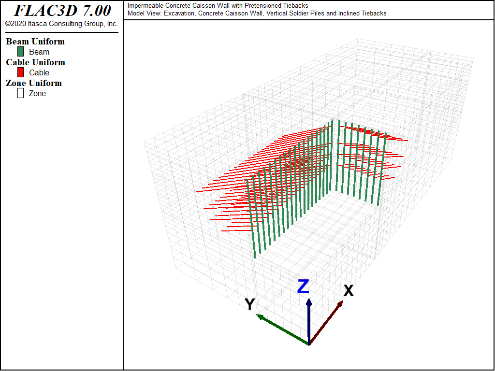
图 1：包含钢桩和倾斜锚拉杆的混凝土沉箱墙开挖（四分之一剖面视图）。
本分析的目的是根据墙体位移和锚拉杆中力的发展来评价开挖的稳定性。分析按以下步骤进行。
- 在开挖前安装混凝土墙和钢桩（深度 26.5 m）以建立初始平衡。初始状态包含考虑地下水位高程 \(z\) = 39.5 m 和不透水墙的孔隙压力分布。本问题的 \(K_0\) 值（静止土压力系数）为 0.6。
- 开挖分五层进行。各层的开挖深度汇总于 表 1（Table 1）。与各层对应的网格单元标注于 图 2（Figure 2） 中。
表 1：开挖深度 层 开挖深度（m） 1 3.5 2 8.0 3 13.0 4 17.5 5 23.5
- 前四层每层开挖后，安装一排锚拉杆，并在进行下一层开挖前对这些锚拉杆施加预张力。
- 第 3 至第 5 层位于水位以下。在每一层开挖前，将开挖区降水至该层开挖深度以下 1 m。与各降水步骤对应的网格单元标注于 图 2（Figure 2） 中。

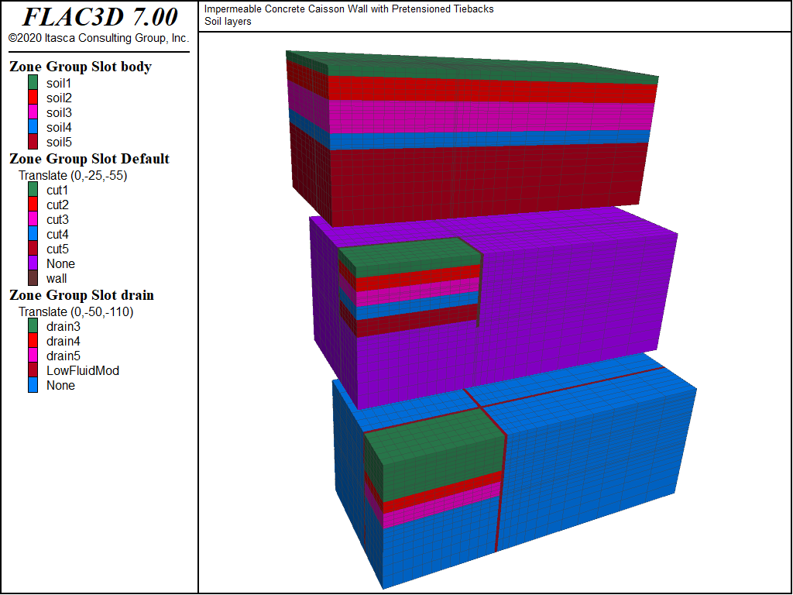
图 2：应用于块体构建窗格和模型窗格中网格单元的分组名称。
本示例重点说明两个方面。
第一，使用 施加锚索单元拉力命令（structure cable apply tension） 命令对锚拉杆施加预张力，该命令在模型循环至平衡的过程中为无黏结锚索单元指定轴力。
第二，模拟降水的流程使用 FLAC3D 中的流体流动计算，以生成与降水阶段所施加边界条件密切对应的孔隙压力分布。与使用 zone water 命令相比，这种方法提供的开挖周围孔隙压力预计能更好地反映现场条件。zone water 命令对墙体附近孔隙压力的计算不如流动计算精确。
地层由五个厚度不同的水平土层组成。土体如图 2（Figure 2） 所示，土体性质汇总于表 2（Table 2）。
初始水位位于地表以下 10.5 m 处（\(z\) = 39.5 m），靠近土 3 的顶部。
| 土 1 | 土 2 | 土 3 | 土 4 | 土 5 | |
|---|---|---|---|---|---|
| 厚度（m） | 3.0 | 7.0 | 10.0 | 5.0 | 25.0 |
| 干密度（kg/m3） | 1830 | 2000 | 2050 | 2100 | 2250 |
| 体积模量（MPa） | 25.0 | 81.9 | 147.0 | 333.0 | 833.0 |
| 剪切模量（MPa） | 11.6 | 37.8 | 68.0 | 154.0 | 625.0 |
| 黏聚力（MPa） | 0.025 | 0.0 | 0.0 | 0.35 | 15.0 |
| 摩擦角（度） | 26 | 34 | 38 | 42 | 45 |
| 剪胀角（度） | 0 | 2 | 5 | 5 | 0 |
| 迁移系数（m2/(Pa-sec)） | 10-7 | 10-7 | 10-7 | 10-7 | 10-7 |
| 孔隙率 | 0.18 | 0.18 | 0.13 | 0.15 | 0.15 |
混凝土墙、钢桩和锚拉杆的性质分别汇总于 表 3（Table 3）、表 4（Table 4） 和表 5（Table 5）。钢桩沿墙以 2.25 m 的间距布置。施工过程中安装四排锚拉杆并与钢桩连接。锚拉杆的倾角约为 25°，安装后按表 5（Table 5） 中列出的荷载施加预张力。
| 厚度（m） | 1.07 |
| 密度（kg/m3） | 2500 |
| 杨氏模量（GPa） | 25.0 |
| 泊松比 | 0.4 |
| 黏聚力（MPa） | 4.0 |
| 摩擦角（度） | 45 |
| 抗拉强度（MPa） | 2.0 |
| 面积（m2） | 0.0144 |
| 间距（m） | 2.25 |
| 杨氏模量（GPa） | 205.0 |
| 泊松比 | 0.3 |
| 惯性矩（m4） | 8.75 × 10-4 |
| 第 1 排 | 第 2 排 | 第 3 排 | 第 4 排 | |
|---|---|---|---|---|
| 面积（m2） | 0.00554 | 0.00554 | 0.00554 | 0.00554 |
| 总长度（m） | 21.897 | 19.691 | 17.187 | 14.398 |
| 黏结长度（m） | 12.0 | 12.0 | 12.0 | 12.0 |
| 预张力（MN） | 0.80 | 0.90 | 1.15 | 1.15 |
| 间距（m） | 2.25 | 2.25 | 2.25 | 2.25 |
| 杨氏模量（GPa） | 205.0 | 205.0 | 205.0 | 205.0 |
| 抗拉屈服强度（MN） | 1.534 | 1.534 | 1.534 | 1.534 |
| 黏结刚度（MN/m/m） | 560.0 | 560.0 | 560.0 | 560.0 |
| 黏结强度（MN/m） | 0.15 | 0.15 | 0.15 | 0.15 |
| 黏结摩擦角（度） | 25 | 25 | 25 | 25 |
建模步骤
使用块体构建窗格创建开挖区四分之一剖面的 FLAC3D 模型，如图 2（Figure 2） 所示。为演示目的加快计算，模型采用较粗的网格，且至边界的距离较短。使用 块体构建 窗格为各土层指定名称，并使用 模型 窗格为开挖顺序和降水顺序指定名称。
本分析使用流体流动配置来模拟开挖降水。表 2（Table 2） 中的土体性质作为“干”性质输入。饱和性质（例如湿密度）在流体流动配置中自动计算。使用 zone water 命令初始化孔隙压力。在已指定网格单元密度、饱和度、孔隙率以及孔隙压力的情况下，通过 zone initialize-stresses 命令获得原位应力状态。
在初始阶段通过为墙体位置处的网格单元指定表 3（Table 3） 中的材料性质来添加混凝土墙。参见图 2（Figure 2）。为了将墙模拟为不透水，为墙体网格单元指定流体空模型（单元流体本构模型指定（zone fluid cmodel assign） null），并将这些网格单元的孔隙率和孔隙压力设为零。（将孔隙率设为零不会影响体密度。）请注意，墙体的添加分两步进行。首先，使墙不透水并对模型进行平衡。然后，更改墙体网格单元的力学性质并再次对模型进行平衡。这样，总应力仅反映墙体重量引起的应力变化，而墙体周围的孔隙压力保持静水压力状态。墙体已就位时模型的初始孔隙压力分布如图 3（Figure 3） 所示。

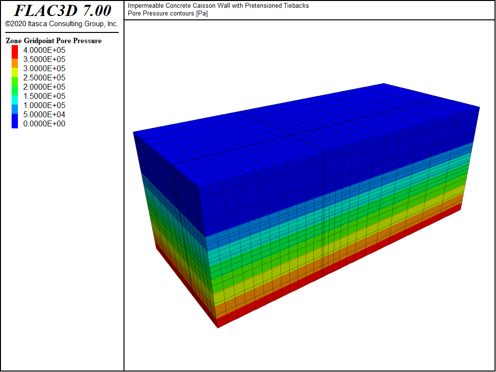
图 3：初始孔隙压力分布。
文件“struct-geometry.dat”中定义的 FISH 函数创建结构（createStructure） 使用 结构单元（structure） 集内的几何逻辑来布置钢桩和锚索锚拉杆的位置。该描述同样也可以很容易地以 CAD 数据的形式导入。
钢桩也在此阶段使用结构梁单元并通过 结构梁单元导入从几何（structure beam import from-geometry） 命令安装。钢桩在墙体网格单元内以 2.25 m 的间距创建。通过使用梁单元，钢桩在梁节点处与墙体网格单元刚性连接。钢桩的位置由图 4（Figure 4） 中的竖直线表示。

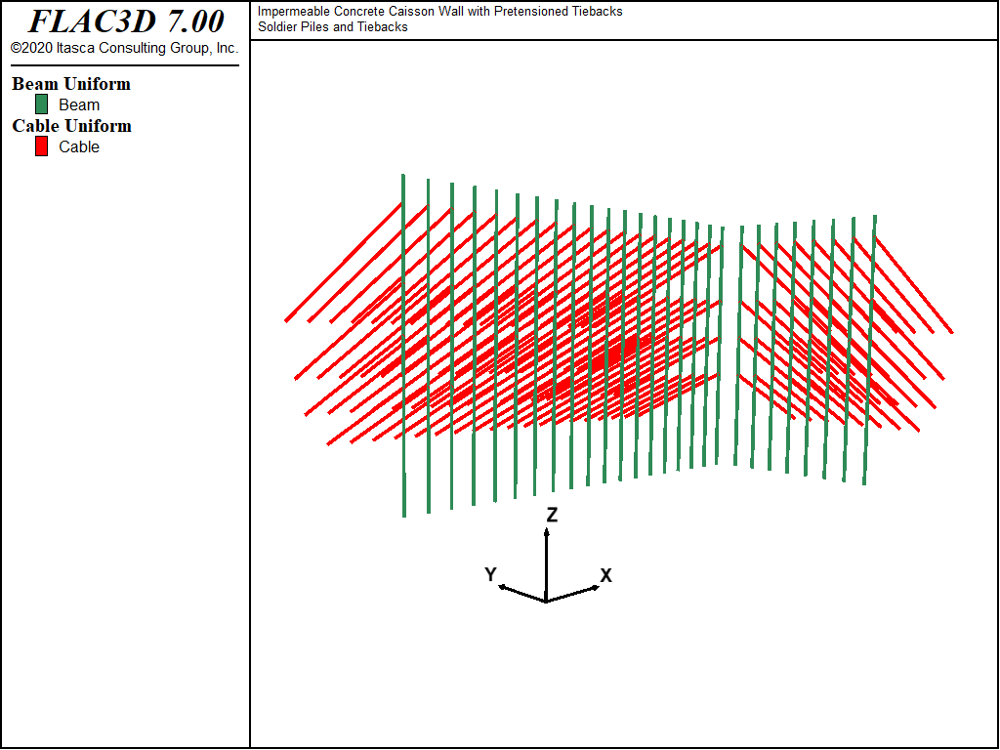
图 4：钢桩（竖直线）和锚拉杆（倾斜线）的位置。
开挖分层通过将开挖区域内的网格单元置空来实现。“开挖”通过在每层内分阶段将网格单元置空而逐步完成。这样可使模型响应的瞬态效应降至最低。
每层开挖后通过使用 结构锚索单元导入从几何（structure cable import from-geometry） 命令分两步（分别对应无黏结段和黏结段）添加一排锚拉杆。请注意，创建过程中使用 snap 关键字以确保端节点落在与现有梁或锚索节点相同的位置，并使用 structure node join 命令在同一位置的节点之间创建刚性连接，从而确保锚拉杆与钢桩连接，且各锚拉杆段相互连接。锚拉杆的几何形状如图 4（Figure 4） 所示。
每个阶段后安装一排锚拉杆。创建锚拉杆后，为其指定表 5（Table 5） 中列出的性质。请注意，最靠近钢桩的锚拉杆段为无黏结段（结构锚索单元属性浆液黏聚力（structure cable property grout-cohesion） 0.0）。
在无黏结段上使用 施加锚索单元拉力命令（structure cable apply tension） 命令对锚拉杆施加预张力。然后将模型循环至平衡，并将所施加的轴力条件设为无效。这些单元中的轴力将保持，但条件失效后，这些单元将正常响应变化。

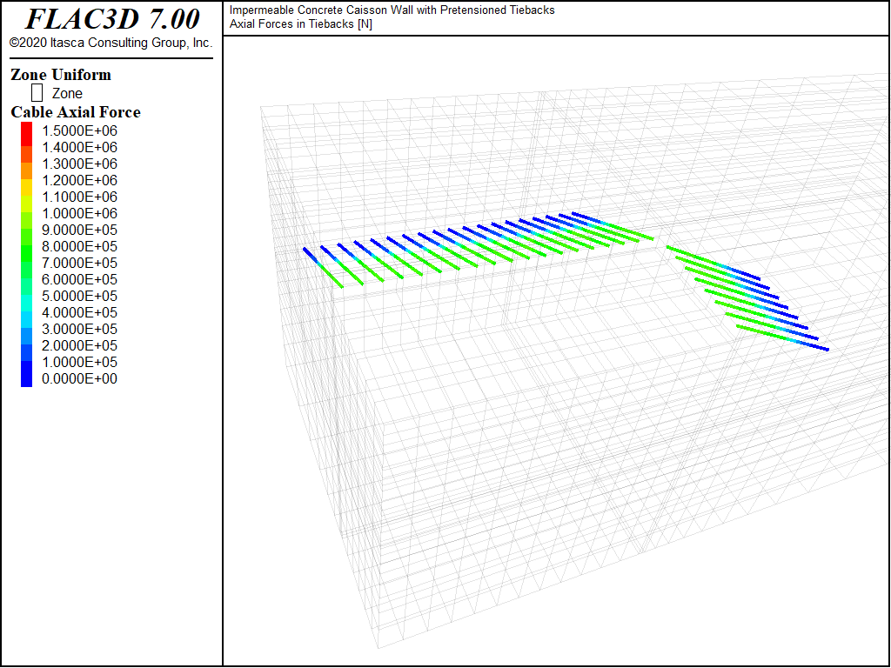
图 5：施加预张力后第一排锚拉杆中的轴力。
通过对第 3、4、5 层的排水深度（各层开挖深度以下 1 m）范围内的孔隙压力设为零来模拟降水。模型对降水的响应分两步计算。首先进行仅流体流动计算，使模型在改变的孔隙压力条件下达到稳定流动状态。然后进行仅力学计算（将流体模量设为零以防止进一步产生孔隙压力）。图 6（Figure 6）、图 7 和图 8 显示了第 3、4、5 层降水后的孔隙压力分布。

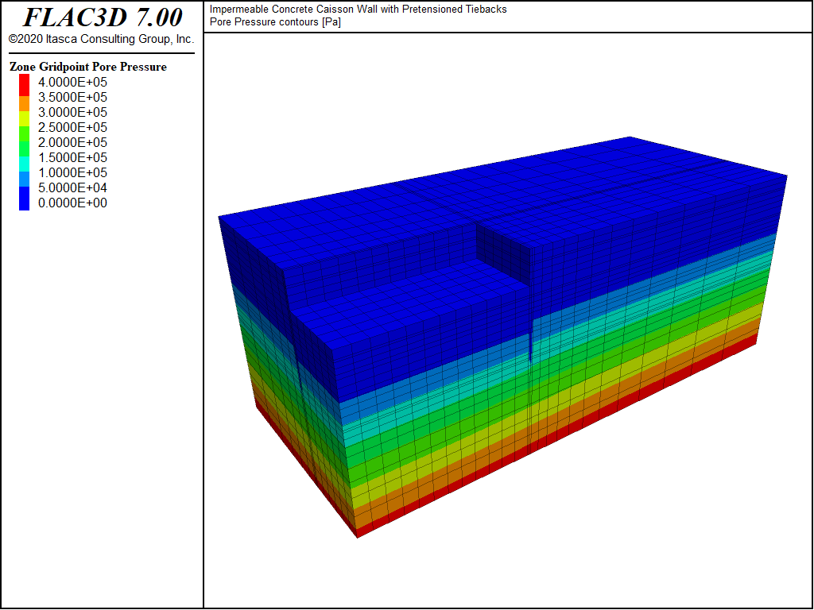
图 6：第 3 层降水后的孔隙压力分布。

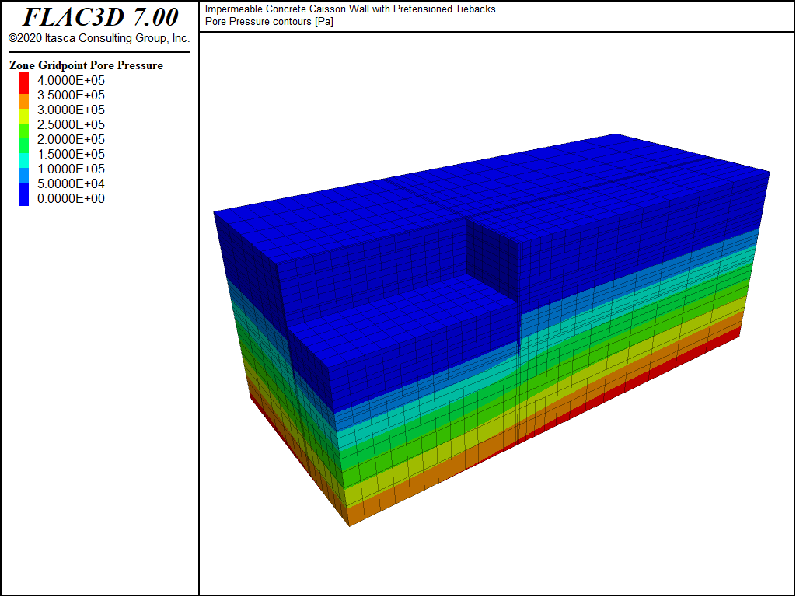
图 7：第 4 层降水后的孔隙压力分布。

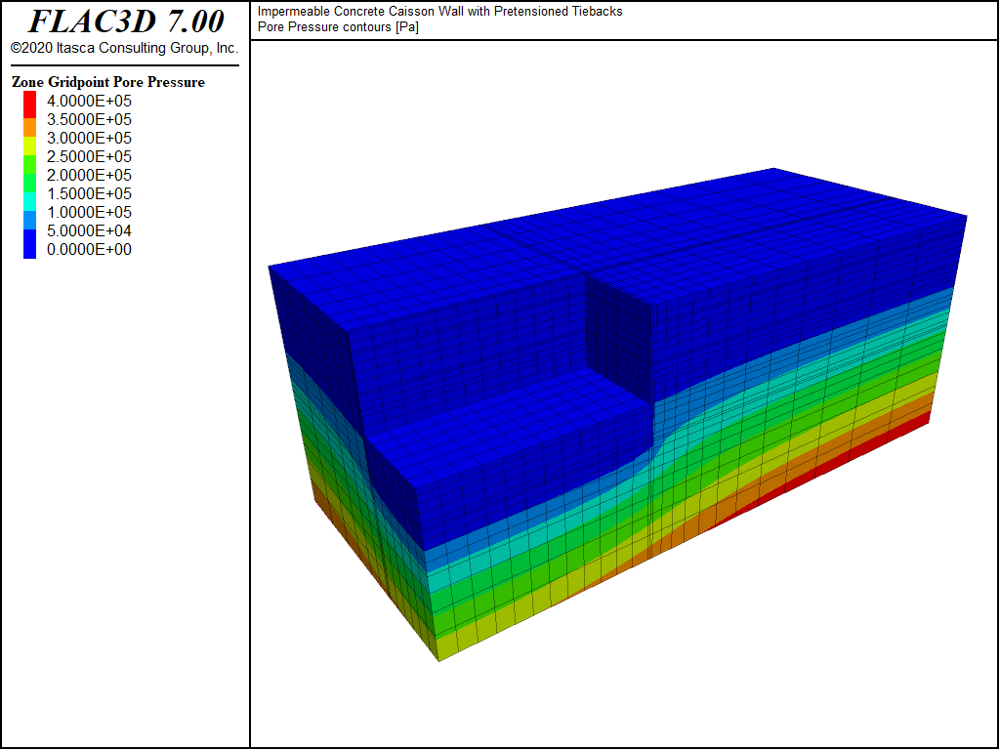
图 8：第 5 层降水后的孔隙压力分布。
结果
下面通过一系列图件给出本示例模拟的结果，展示了随开挖分层推进锚拉杆轴力的发展以及土体和墙体的位移。
图 9（Figure 9） 至图 12（Figure 12） 绘制了锚拉杆中的轴力。这些图给出垂直于 \(x\) 轴的视图。可以发现最大轴力出现在沿平行于 \(x\) 轴的墙体的第三排锚拉杆中。在第 4 层和第 5 层开挖时，最大值约为 1.3 MN。

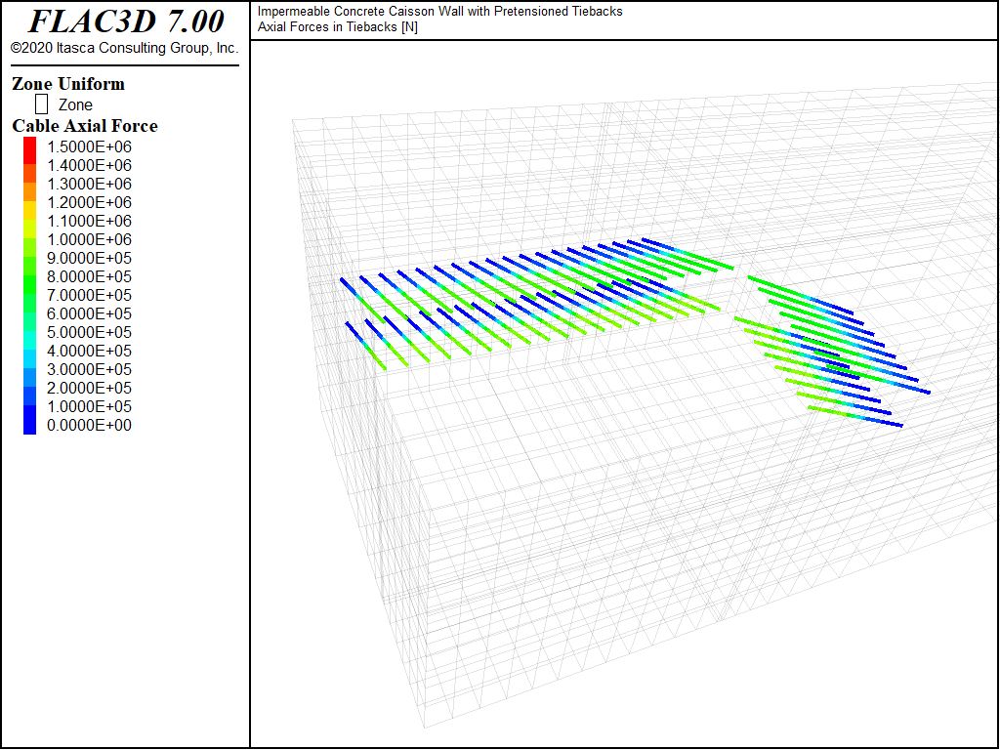
图 9：第 2 层开挖后锚拉杆中的轴力。

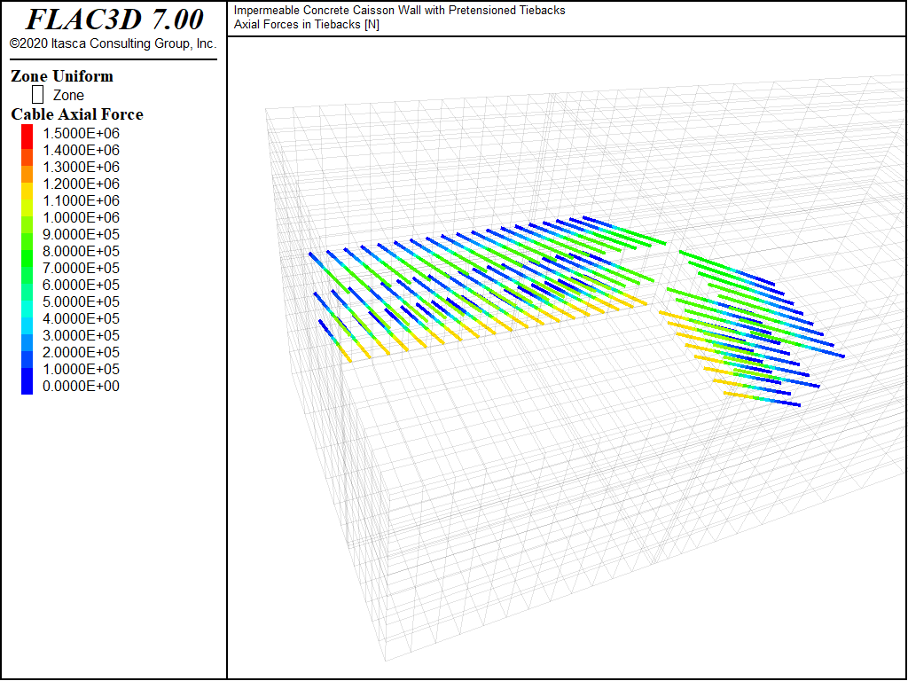
图 10：第 3 层开挖后锚拉杆中的轴力。

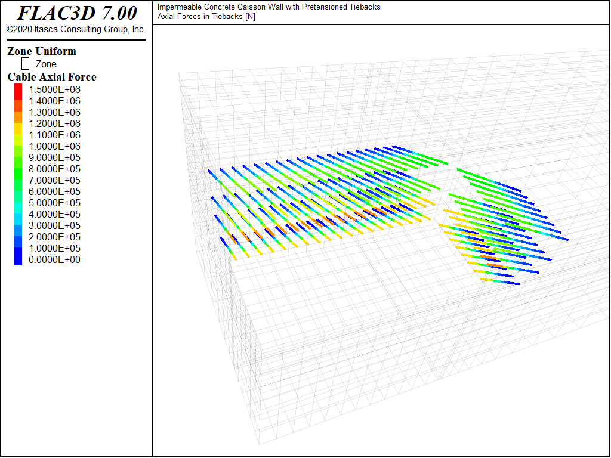
图 11：第 4 层开挖后锚拉杆中的轴力。

开挖引起的位移如图 13（Figure 13） 至图 17（Figure 17） 所示。最大位移出现在平行于 \(x\) 方向的墙体中部高度处，第 5 层开挖完成后约为 8.1 mm（指向开挖区内），如图 17（Figure 17） 所示。这大致与承受最高拉力的第三层锚拉杆位置一致。图 18（Figure 18） 显示了在两个位置记录的整个模拟过程中的位移时程，这两个位置与各墙体上最大位移位置重合。图中的上两条线对应竖向位移，下两条线对应水平位移。降水阶段表现为水平线段。开挖在降水阶段之后进行，墙体向开挖区内移动，直到锚索施加预张力，这表现为位移时程图中下两条线向上的短趋势。

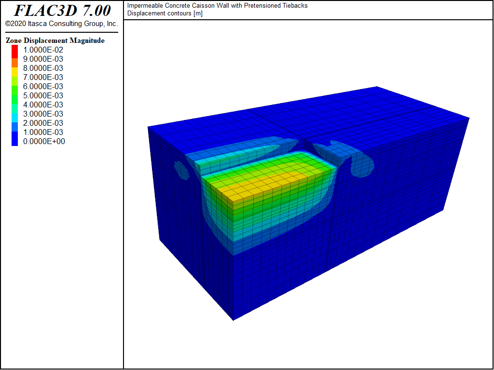
图 13：第 1 层开挖后的位移云图。

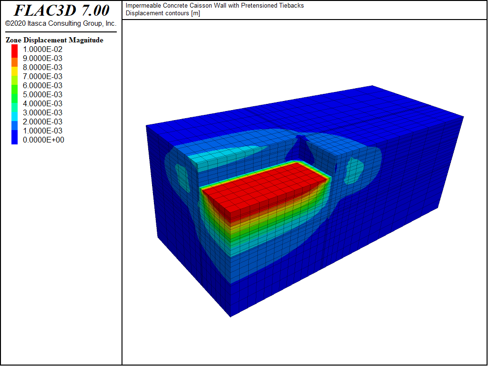
图 14：第 2 层开挖后的位移云图。

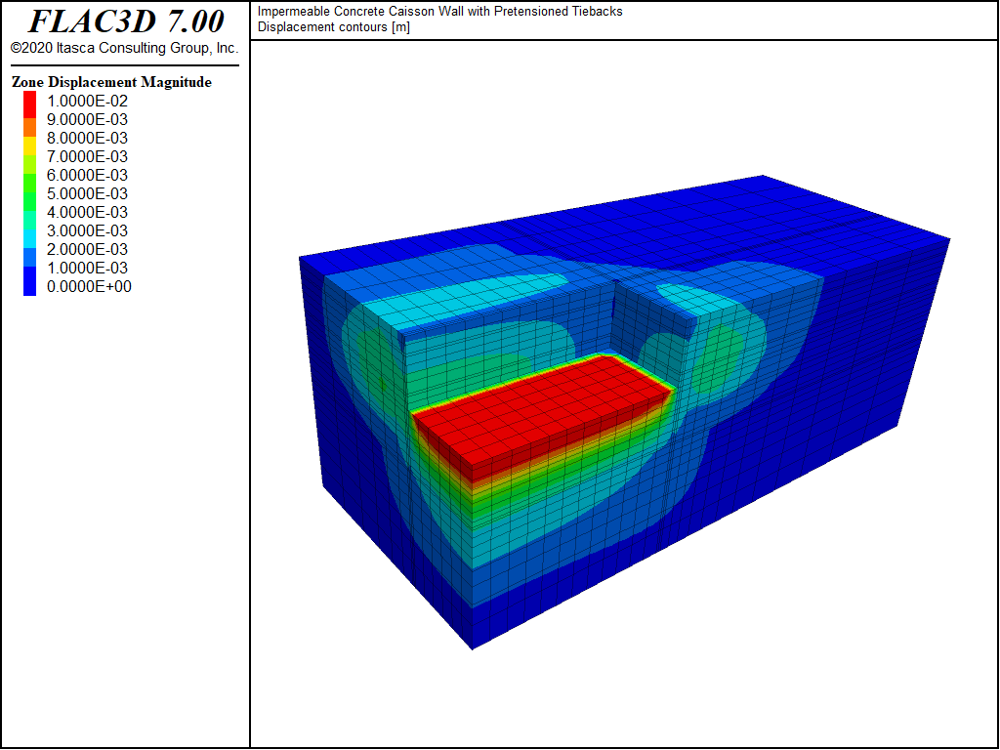
图 15：第 3 层开挖后的位移云图。

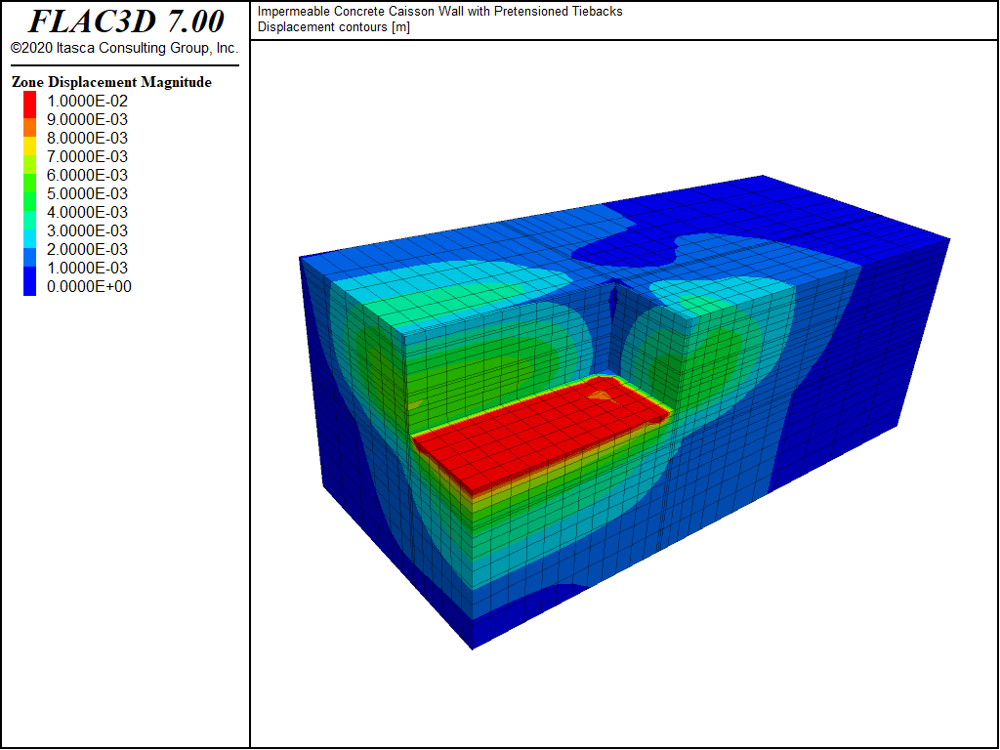
图 16：第 4 层开挖后的位移云图。

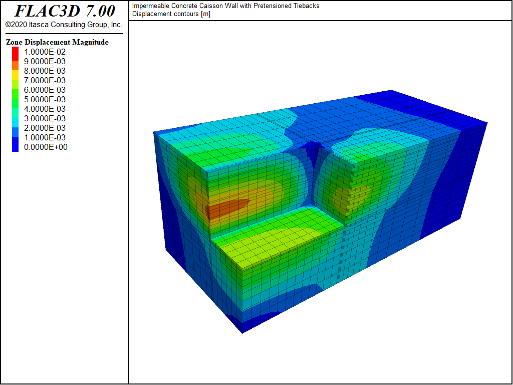
图 17：第 5 层开挖后的位移云图。

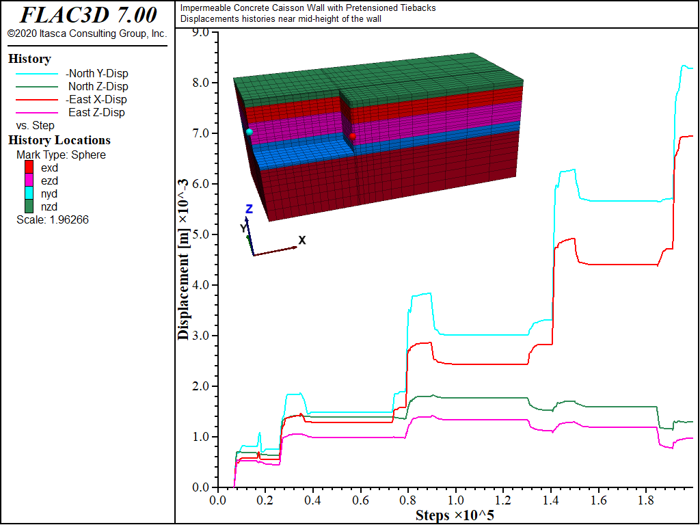
图 18：墙中部高度附近最大位移处的位移时程。
数据文件
CaissonWithTiebacks.dat
model new
model title 'Impermeable Concrete Caisson Wall with Pretensioned Tiebacks'
fish automatic-create off
model configure fluid
model large-strain off
; 在 Building Blocks 中交互式创建的模型几何，
; 使用 State Pane 导出
program call 'geometry' suppress
zone generate from-building-blocks
; 在 Model Pane 中交互式为区域命名，并使用 State Pane 导出
program call 'names' suppress
zone face skin ; 为模型边界命名
; 创建锚索和梁的几何，
; 此处使用 FISH，也可从 CAD 导入。
program call 'struct-geometry' suppress
model save 'grid'
; 初始化模型，包括边界条件、
; 应力和孔隙水压力
program call 'initialize'
; 安装墙体
program call 'install-wall'
; 安装梁
program call 'install-beam'
; 开挖阶段
program call 'stage1'
program call 'stage2'
program call 'stage3'
program call 'stage4'
program call 'stage5'
initialize.dat
;--------------------------------------
; 求模型的初始平衡
;--------------------------------------
model restore 'grid'
model gravity 9.81
; 边界条件 - 滚轴边界
zone face apply velocity-normal 0 range group 'Bottom'
zone face apply velocity-normal 0 range group 'East' or 'West'
zone face apply velocity-normal 0 range group 'North' or 'South'
; 力学模型和参数
zone cmodel assign mohr-coulomb
zone property bulk 2.50e7 shear 1.16e7 friction 26 cohesion 2.5e4 ...
dilation 0 tension 1e10 density 1830 range group 'soil1'
zone property bulk 8.19e7 shear 3.78e7 friction 34 cohesion 0 ...
dilation 2 tension 1e10 density 2000 range group 'soil2'
zone property bulk 1.47e8 shear 6.80e7 friction 38 cohesion 0 ...
dilation 5 tension 1e10 density 2050 range group 'soil3'
zone property bulk 3.33e8 shear 1.54e8 friction 42 cohesion 3.5e5 ...
dilation 5 tension 1e10 density 2100 range group 'soil4'
zone property bulk 8.33e8 shear 6.25e8 friction 45 cohesion 1.5e7 ...
dilation 0 tension 1e10 density 2250 range group 'soil5'
; 流体模型与参数
zone fluid cmodel assign isotropic
zone initialize fluid-density 1000
zone gridpoint initialize fluid-modulus 0
zone gridpoint initialize fluid-tension -1e-3
zone fluid property permeability 1e-7
zone fluid property porosity 0.18 range group 'soil1' or 'soil2'
zone fluid property porosity 0.13 range group 'soil3'
zone fluid property porosity 0.15 range group 'soil4'
zone fluid property porosity 0.05 range group 'soil5'
; 初始孔隙水压力和饱和度 - 水位 39.5
zone water density 1000
zone water plane normal (0,0,1) origin (0,0,39.5)
zone gridpoint initialize saturation 0 range position-z 39.5 50
zone gridpoint fix pore-pressure 0 range position-z 39.5 tol 0.1
; 初始化重力引起的应力状态
zone initialize-stress ratio 0.6
; 循环以确保达到平衡
model fluid active off
model solve elastic ratio-local 1e-3
; 保存初始状态以供参考
model save 'initial'
install-wall.dat
;--------------------------------------
; 安装不透水混凝土墙
;--------------------------------------
model restore 'initial'
; 重置位移和速度场以供参考
zone gridpoint initialize displacement (0,0,0)
zone gridpoint initialize velocity (0,0,0)
; --- 混凝土墙安装 ---
; 首先将流体参数改为不透水
zone fluid property porosity 0 range group 'wall'
zone gridpoint initialize pore-pressure 0 range group 'wall'
zone fluid cmodel assign null range group 'wall'
model solve ratio-local 1e-3
; 改变力学参数
zone property tension 0.0
zone property density 2500 young 2.5e10 poisson 0.4 friction 45 ...
cohesion 4e6 tension 2e6 range group 'wall'
model solve ratio-local 1e-3
model save 'wall'
install-beam.dat
;---------------------
; 创建型钢梁
;---------------------
model restore 'wall'
zone gridpoint initialize displacement (0,0,0)
zone gridpoint initialize velocity (0,0,0)
struct beam import from-geometry 'structure' segments 13 range group 'beam'
structure beam property young 2.05e11 poisson 0.3
structure beam property cross-sectional-area 1.44e-2 ...
moi-z 875e-6 moi-y 875e-6 moi-polar 0.0
;
model solve ratio-local 1e-3
model save 'beam'
stage1.dat
model restore 'beam'
; 重置位移和速度以供参考
zone gridpoint initialize displacement (0,0,0)
zone gridpoint initialize velocity (0,0,0)
; --- 历史 ---
; 开挖北侧
zone history name 'nyd' displacement-y position (0, 18.283, 36)
zone history name 'nzd' displacement-z position (0, 18.283, 36)
; 开挖东侧
zone history name 'exd' displacement-x position (42.0715, 0, 34.25)
zone history name 'ezd' displacement-z position (42.0715, 0, 34.25)
; --------------------------
; - 开挖阶段 1 -
; --------------------------
; --- 位于水位以上，无需排水，但为稳定起见固定该线 ---
; --- 开挖 cut1
zone cmodel assign null range group 'cut1'
model solve ratio-local 1e-3
model save 'excavation-1'
; --- 第一层拉锚 ---
struct cable import from-geometry 'structure' segments 5 snap ...
group 'cable1-1' range group 'cable1-1'
struct cable import from-geometry 'structure' segments 10 snap ...
group 'cable1-2' range group 'cable1-2'
struct node join range group 'cable1-1' ; 将未注浆锚索与型钢
; 梁及注浆锚索刚性连接
struct cable property young 2.05e11 yield-compression 1.0e5 ...
yield-tension 15.34e5 cross-sectional-area 5.54e-3
struct cable property grout-cohesion 0.0 grout-friction 0.0 ...
grout-stiffness 0.0 range group 'cable1-1'
struct cable property grout-cohesion 1.5e5 grout-friction 25.0 ...
grout-stiffness 0.56e9 grout-perimeter 0.264 ...
range group 'cable1-2'
; 对拉锚施加预应力
struct cable apply tension value 8e5 range group 'cable1-1'
model solve ratio-local 1e-3
struct cable apply tension active off
model save 'stage-1'
stage2.dat
model restore 'stage-1'
; --------------------------
; - 开挖阶段 2 -
; --------------------------
; --- 位于水位以上（_drain2 > _wt），无需排水 ---
; --- 分阶段开挖
zone cmodel assign null range group 'cut2'
model solve ratio-local 1e-3
model save 'excavation-2'
; --- 第二层拉锚 ---
struct cable import from-geometry 'structure' segments 5 snap ...
group 'cable2-1' range group 'cable2-1'
struct cable import from-geometry 'structure' segments 10 snap ...
group 'cable2-2' range group 'cable2-2'
struct node join range group 'cable2-1' ; 将未注浆锚索与型钢
; 梁及注浆锚索刚性连接
struct cable property young 2.05e11 yield-compression 1.0e5 ...
yield-tension 15.34e5 cross-sectional-area 5.54e-3
struct cable property grout-cohesion 0.0 grout-friction 0.0 ...
grout-stiffness 0.0 range group 'cable2-1'
struct cable property grout-cohesion 1.5e5 grout-friction 25.0 ...
grout-stiffness 0.56e9 grout-perimeter 0.264 ...
range group 'cable2-2'
; 对拉锚施加预应力
struct cable apply tension value 9e5 range group 'cable2-1'
model solve ratio-local 1e-3
struct cable apply tension active off
model save 'stage-2'
stage3.dat
model restore 'stage-2'
; --------------------------
; - 开挖阶段 3 -
; --------------------------
; --- 将地下水位降至开挖底面以下 1 m ---
; （先计算渗流）
model fluid active on
model mechanical active off
zone gridpoint fix pore-pressure 0 range group 'drain3'
zone fluid cmodel assign null range group 'drain3'
zone gridpoint initialize fluid-modulus 20
zone gridpoint initialize fluid-modulus 2 range group 'LowFluidMod'
model solve fluid ratio-flow 1e-4
model save 'drain-fluid-3'
; （再计算力学）
model fluid active off
model mechanical active on
zone gridpoint initialize fluid-modulus 0
model solve ratio-local 1e-3
model save 'drain-mech-3'
; --- 分阶段开挖
zone cmodel assign null range group 'cut3'
model fluid active off
model mechanical active on
model solve ratio-local 1e-3
model save 'excavation-3'
; --- 第三层拉锚 ---
struct cable import from-geometry 'structure' segments 5 snap ...
group 'cable3-1' range group 'cable3-1'
struct cable import from-geometry 'structure' segments 10 snap ...
group 'cable3-2' range group 'cable3-2'
struct node join range group 'cable3-1' ; 将未注浆锚索与型钢
; 梁及注浆锚索刚性连接
struct cable property young 2.05e11 yield-compression 1.0e5 ...
yield-tension 15.34e5 cross-sectional-area 5.54e-3
struct cable property grout-cohesion 0.0 grout-friction 0.0 ...
grout-stiffness 0.0 range group 'cable3-1'
struct cable property grout-cohesion 1.5e5 grout-friction 25.0 ...
grout-stiffness 0.56e9 grout-perimeter 0.264 ...
range group 'cable3-2'
; 对拉锚施加预应力
struct cable apply tension value 11.5e5 range group 'cable3-1'
model solve ratio-local 1e-3
struct cable apply tension active off
model save 'stage-3'
stage4.dat
model restore 'stage-3'
; --------------------------
; - 开挖阶段 4 -
; --------------------------
; --- 将地下水位降至开挖底面以下 1 m ---
; （先计算渗流）
model fluid active on
model mechanical active off
zone gridpoint fix pore-pressure 0 range group 'drain4'
zone fluid cmodel assign null range group 'drain4'
zone gridpoint initialize fluid-modulus 20
zone gridpoint initialize fluid-modulus 2 range group 'LowFluidMod'
model solve fluid ratio-flow 1e-4
model save 'drain-fluid-4'
; （再计算力学）
model fluid active off
model mechanical active on
zone gridpoint initialize fluid-modulus 0
model solve ratio-local 1e-3
model save 'drain-mech-4'
; --- 分阶段开挖
zone cmodel assign null range group 'cut4'
model fluid active off
model mechanical active on
model solve ratio-local 1e-3
model save 'excavation-4'
; --- 第四层拉锚 ---
struct cable import from-geometry 'structure' segments 5 snap ...
group 'cable4-1' range group 'cable4-1'
struct cable import from-geometry 'structure' segments 10 snap ...
group 'cable4-2' range group 'cable4-2'
struct node join range group 'cable4-1' ; 将未注浆锚索与型钢
; 梁及注浆锚索刚性连接
struct cable property young 2.05e11 yield-compression 1.0e5 ...
yield-tension 15.34e5 cross-sectional-area 5.54e-3
struct cable property grout-cohesion 0.0 grout-friction 0.0 ...
grout-stiffness 0.0 range group 'cable4-1'
struct cable property grout-cohesion 1.5e5 grout-friction 25.0 ...
grout-stiffness 0.56e9 grout-perimeter 0.264 ...
range group 'cable4-2'
; 对拉锚施加预应力
struct cable apply tension value 11.5e5 range group 'cable4-1'
model solve ratio-local 1e-3
struct cable apply tension active off
model save 'stage-4'
stage5.dat
model restore 'stage-4'
; --------------------------
; - 最终开挖阶段 -
; --------------------------
; --- 将地下水位降至开挖底面以下 1 m ---
; （先计算渗流）
model fluid active on
model mechanical active off
zone gridpoint fix pore-pressure 0 range group 'drain5'
zone fluid cmodel assign null range group 'drain5'
zone gridpoint initialize fluid-modulus 20
zone gridpoint initialize fluid-modulus 2 range group 'LowFluidMod'
model solve fluid ratio-flow 1e-4
model save 'drain-fluid-5'
; （再计算力学）
model fluid active off
model mechanical active on
zone gridpoint initialize fluid-modulus 0
model solve ratio-local 1e-3
model save 'drain-mech-5'
; --- 分阶段开挖
zone cmodel assign null range group 'cut5'
model fluid active off
model mechanical active on
model solve ratio-local 1e-3
model save 'stage-5'
尾注
| [1] | 要在 FLAC3D 中查看该项目，请使用程序菜单。
⮡ FLAC |
| [2] | 本示例应用源自与 Matthew Janes（Isherwood Associates，加拿大安大略省密西沙加）合作准备的演示模型。 |
| 这些内容对您有帮助吗？… | FLAC3D © 2019, Itasca | 原文更新于 2020 年 10 月 8 日 |